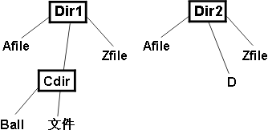
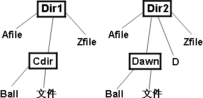

| 概念：测试构想目录 |
 |
|
| 相关元素 |
|---|
简介许多编程工作涉及获取以前反复使用的资源，并且仍要在不同的环境中再次使用。那些资源通常是某个类数据结构（如链接列表、散列表或关系数据库）或操作（如搜索、排序、创建临时文件或弹出浏览器窗口）。例如，两个客户关系数据库将具有许多很陈旧的特征。 关于这些陈旧的数据库的有趣事情是它们还具有老生常谈的错误。 人们不会发明有创造力的新方法来将某些内容错误地插入双重链接的列表。 他们很容易犯自己和其他人以前犯过的同样错误。弹出浏览器窗口的程序员可能犯以下这些老生常谈的错误：
由于错误都是老生常谈的，因此是测试构想可以发现的错误。将这些测试构想放入测试构想目录，以便可以进行重用。 测试构想目录如何查找错误目录的优点之一是单个测试构想可用于查找多个底层错误。这里是能查找两个错误的一个意见的示例。 第一个错误在 C 编译器中。该编译器运用命令行选项，如“-table”、“-trace”或“-nolink”。 这些选项可缩写成它们最小的唯一形式。例如，“-ta”相当于“-table”。但是，不能缩写成“-t”，因为它是模棱两可的：它可以表示“-table”或“-trace”。 在内部，命令行选项按如下形式存储在表中：
当在命令行上遇到选项时，就在表中查找。如果它是任何表项的前缀，则说明找到匹配；即“-t”与“-table”匹配。 在找到一个匹配之后，在表的其余部分搜索另一个匹配。如果有另一个匹配，说明有错误，因为它说明存在模棱两可的情况。 执行搜索的代码看上去如下：
您看出问题了吗？它的确很微妙。 问题出在中断语句。当找到重复匹配时，它想要退出最外层的封闭循环，但实际上只退出了内层循环。这和未找到第二个匹配是同样的效果：返回第一个匹配的索引。 请注意，仅当该选项在表中搜索到两次匹配（如“-t”）时，会发现此错误。 现在，让我们查看第二个完全不同的错误。 代码接受一个字符串。假设用“+”替换字符串中的最后一个“=”。如果没有“=”，则什么都不做。该代码使用标准 C 库例程。strchr. 这是代码：
此问题也有些微妙。 函数 strchr 返回字符串中的第一个匹配，而不是最后一个。正确的函数是 strrchr。问题极像一个印刷错误。（而实际上，深层的问题是将仅仅在拼写上不同的两个函数放入标准库肯定是不明智的。） 仅当输入中有两个或多个等号时会发现此错误。即：
这里有趣和有用的结论是由于完全不同的根本原因（印刷错误，对 C 构造的误解）和代码的不同表现（调用了错误的函数，对中断语句的误用）而找到两个错误，这可用同一个测试构想（搜索发生两次的情况）找到。 好的测试构想目录什么能做成一本好的目录呢？
给定这些规则，似乎最好有多个目录。有些数据和操作对于所有的编程工作都是通用的，因此这些测试构想可以放入所有程序员都能使用的目录。其他内容是特定于具体领域的，因此所用的测试构想可以放入特定于领域的测试构想目录。 以下示例中使用的样本目录（获得 Adobe Reader）是可以作为起点的一个很好的示例。AND 和 OR 混合的测试构想提供了另一个示例。 使用测试构想目录的示例这里说明了可以如何使用样本目录。假设要实现以下方法：
applyToCommonFiles 将两个目录用作参数。当第一个目录中的文件与第二个目录中的某个文件的名称相同时，applyToCommonFiles 会对这一对文件执行某项操作。此操作遍历到子目录。 使用此目录的方法将是细查整个目录，查找与您的情况匹配的主要标题。请考虑每个标题下的测试构想，了解它们是否相关，然后将相关的内容写入测试构想列表。 注意：此分步描述会使使用目录似乎变得很费力。阅读如何创建核对表比实际创建一个核对表所花的时间要长。 因此，在 applyToCommonFiles 的例子中，可按本节剩余部分中通篇描述的方式来应用此目录。 第一项是用于任何对象的。任何实参都可以是空指针吗？这是 applyToCommonFiles 及其调用者之间的约定问题。此约定可以是调用者将不传入空指针。如果调用者传入了空指针，则您不能依赖期望的行为：applyToCommonFiles 可能执行任何操作。在这种情况下，没有合适的测试，因为无论 applyToCommonFiles 做什么都不会出错。但是，如果要求 applyToCommonFiles 检查空指针，则测试构想将会有用。让我们假设是后一种情况，它为我们提供以下初始的测试构想列表：
下一个目录条目是字符串。文件名是字符串，并比较字符串，查看是否匹配。使用空字符串（""）的测试构想似乎没用。可能要使用某些标准字符串比较例程，并且它们将正确处理空字符串。 不过请等一下...，如果存在要比较的字符串，那么大小写怎么处理？假设 d1 包含一个名为“File”的文件。d2 也还包含一个名为“file”的文件。那些文件应算作匹配吗？在 UNIX 上，肯定不是。在 Microsoft® Windows® 上，几乎肯定是匹配。那是另一个测试构想：
请注意，此测试构想不是直接来自目录的。但是，此目录引起了我们对程序的某个特定方面（文件名和字符串）的注意，同时创造性使我们产生了另一个想法。不必过于局限地使用此目录，这是很重要的 － 将它作为一种提供好建议的技术，一种激发新想法的方法。 下一个条目是集合。目录是一个文件集合。处理集合的许多程序未能处理空集合。而处理空集合或有多个元素的集合的一些程序未能处理只有一个元素的集合。因此以下意见是有帮助的：
下一个意见是使用具有最大可能的大小的集合。applyToCommonFiles 通常情况下将用于小目录。然后，一些用户出现并将它们用于两棵具有数以千计的文件的巨型目录树，只发现程序内存效率出奇的低并无法处理该现实案例。 现在，测试目录的绝对最大大小并不重要；它只需和用户可能尝试的一样大。但是，至少应存在某个测试，其中目录中的文件多于三个：
最后的测试构想（重复元素）不适用于具有多个文件的目录。即，如果一个目录中包含两个同名文件，则问题与 applyToCommonFiles 无关，而是由于您的文件系统已损坏。 下一个目录条目是搜索。这些构想可转换成如下 applyToCommonFiles 术语：
最终的测试构想将检查 applyToCommonFiles。发现第一个匹配后就立即返回吗？在这之前，测试构想中的附加说明注释假定程序将使用某个库例程取得目录中文件的列表，该例程按字母顺序返回这些文件。如果不是，则最好使用最后一个作为匹配。在花大量时间查出文件是如何排序之前，问问自己将匹配元素放在最后使查找缺陷更容易的可能性有多大。但如果代码明确地使用索引经过集合，则将元素放在集合最后更有用。如果它正使用迭代器，则顺序有关系是极不可能的。 让我们再来查看样本目录中的一个条目。链接结构条目提醒我们比较的是目录树，而不只是文件的平面集合。确定如何测试 applyToCommonFiles 使我们不得不面对其描述的不完整性。 如果目录结构如下所示:  图 1：目录结构 applyToCommonFiles 是否会向下遍历至目录 Cdir？这似乎没有意义。可能与其他目录树中的任何文件都不匹配。实际上，似乎只有当子目录名称匹配时，子目录中的文件才会匹配。也就是说，假设具有以下目录结构：  图 2：第二个目录结构 名为“File”的文件不匹配，因为它们位于不同的子目录。仅当它们在以下两个地方中具有相同名称时，才应该被遍历：d1 d2. 这便引出了以下测试构想：
但这又引起了其他问题。应将操作（op）应用于匹配的子目录，还是只应用于匹配的文件呢？如果适用于子目录，应在遍历之前还是之后运用呢？例如，如果操作删除了匹配的文件或目录，两者就有所不同了。对于这种情况，应该允许操作修改目录结构吗？更具体地说：applyToCommonFiles 的正确行为（如果它要做的话）是什么？（这是提出迭代器的同一个问题。） 这些类型的问题通常在仔细阅读创建测试构想的方法描述时提出。但目前让我们先将它们放在一边。无论答案是什么，都将必须有针对它们的测试构想 － 检查代码是否正确实现答案的测试构想。 让我们返回到目录。我们还未考虑到它的所有测试构想。第一个意见 － 空（结构是空的）－ 寻找空的目录。我们已从集合条目中得到了。我们也获得了非空的最小结构，这是具有单个元素的目录。这种类别的冗余并不罕见，但容易被忽略。 循环结构怎么样？目录结构不能是循环的 － 一个目录不能在它的一个子目录中或在自身之中……或者它可以吗？快捷方式（在 Windows 上）或符号链接（在 UNIX 上）怎么样呢？如果 d1 目录树中存在指回到 d1 的快捷方式，那么 applyToCommonFiles 是否应始终保持向下遍历？答案可能会引出一个或多个新的测试构想：
依据正确的行为，可能会存在比那更多的测试构想。 最后，深度大于一怎么样呢？早期的测试构想将确保测试向下遍历至某一层子目录，但应该检查 applyToCommonFiles 是否保持向下遍历：
创建和维护自己的测试构想目录如前面提到的，类属目录将不包含您需要的所有测试构想。但特定于领域的目录在创建它们的公司以外尚未发布。如果要使用，将需要建立这些目录。这里有一些建议。
|
© Copyright IBM Corp. 1987, 2006. All Rights Reserved. |